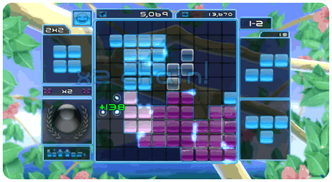
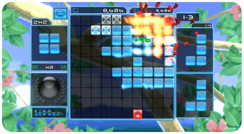

5 |
Bienvenue à bittos+ ! |
 |
|
Pour le Joueur Calme, pour s’amuser, Lire Ceci ! Bienvenue à un tout nouveau jeu puzzle à la fois accrochant, innovateur, stratégique, facile, spécialement réalisé pour le joueur nonchalant et aisé qui existe dans chacun de nous !
Pour le Joueur Agressif et Intense, Lire Ceci !
Pour Tous, Lire Ceci ! Le nouveau grand jeu des jeux est arrivé ! bittos+ c’est tout simplement déplacer vos blocs en haut, en bas, à gauche et à droite, les faire tourner et les placer sur la table de jeu, au bon endroit, pour créer des carrés. Oui, des carrés! En effet, faire des carrés, et des carrés au milieu de carrés font des Bittos ! Plus ont fait de Bittos et plus les résultats sont incroyables et accrochant ! Existe-t’il quelque chose de plus amusant ? Non, rien. Grâce à de multiples modes de déblocage, de modes de jeux variés s’adaptant au goût de chacun, de nombreuses méthodes de temps de réaction, de Prix donnés en jeu, de tableaux de points pour vous et votre entourage, bittos+ vous transporte vers des endroits fabuleux et dans un monde à part avec la promesse d’offrir une nouvelle expérience de jeu.  Positionner des blocs et créer des Bittos offre des heures entières de détente pour toute la famille. Le plus vous jouez et contrôlez vos talents, le plus de pièces sont lâchées. Mais le meilleur est que plus vous jouez, plus grande est la compétition et la valeur de l’enjeu. Submergez-vous dans bittos+, et bittos+ deviendra de plus en plus compétitif et stratégique – devenant continuellement plus complexe et éveille en vous le désir de Jouer, toujours Jouer ?!!  Amusez-vous !
|

 Bienvenue à un tout nouveau jeu puzzle à la fois accrochant, innovateur, harcelant, stratégique, spécialement fait sur mesure pour le véritable joueur hardi et compétitif caché dans notre subconscient !
Bienvenue à un tout nouveau jeu puzzle à la fois accrochant, innovateur, harcelant, stratégique, spécialement fait sur mesure pour le véritable joueur hardi et compétitif caché dans notre subconscient ! |
 |
 |